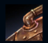
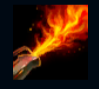
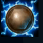
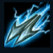
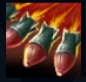

Rumble
| Rumble The Mechanized Menace | |
|---|---|
| Release date | 26.04.2011 |
| Class | Battlemage |
| Positions | Top |
| Resource | heat |
| Range type | Melee |
| Adaptive type | Magic |
| Base statistics | |||
| Health | 560 – 2022 | Resource | N/A |
| Health regen. | 7.5 –15.55 |
Resource regen. | N/A |
| Armor | 33 – 99.75 | Attack damage | 64 – 115 |
| Magic resist. | 32 – 53.25 | Crit. damage | 175% |
| Move. speed | 345 | Attack range | 125 |
Rumble este un inventator tânăr și arțăgos. Cu ajutorul propriilor mâini și al unui morman de fiare vechi, acest yordle irascibil a construit un uriaș costum mecanizat, dotat cu un arsenal întreg de harpoane electrificate și rachete incendiare. Deși unii râd de invențiile lui din gunoaie, Rumble nu se supără... la urma urmei, ei n-au niciun ''Scuipător de flăcări'' la îndemână. |  |
TITANUL DE LA FIARE VECHI Rumble se ''Încălzește'' după fiecare vrajă folosită. Când acumulează 50% căldură, ajunge în ''Zona periculoasă'', iar toate abilitățile sale de bază primesc efecte bonus. Când acumulează 100% căldură, începe să se supraîncălzească, iar atacurile sale de bază provoacă daune bonus, dar nu-și mai poate folosi vrăjile timp de câteva secunde. |
||
|---|---|---|---|---|
 |
SCUIPĂTORUL DE FLĂCĂRI Rumble îi incendiază pe inamicii aflați în fața lui, provocând daune magice timp de 3 secunde într-o zonă în formă de con. Când se află în ''Zona periculoasă'', valoarea daunelor crește. | |||
 |
SCUT DIN FIARE VECHI Rumble își creează un scut care îl protejează de daune și îi acordă o creștere bruscă a vitezei. Când se află în ''Zona periculoasă'', forța scutului și bonusul de viteză cresc. |
|||
|  |
HARPONUL ELECTRIC Rumble lansează un harpon, electrocutându-și ținta cu daune magice și reducându-i viteza de mișcare. Poate avea 2 harpoane simultan. Când se află în ''Zona periculoasă'', daunele și procentajul încetinirii cresc |
|||
 |
EGALIZATORUL Rumble lansează o serie de rachete, creând un zid de flăcări care provoacă daune inamicilor și îi încetinește. |